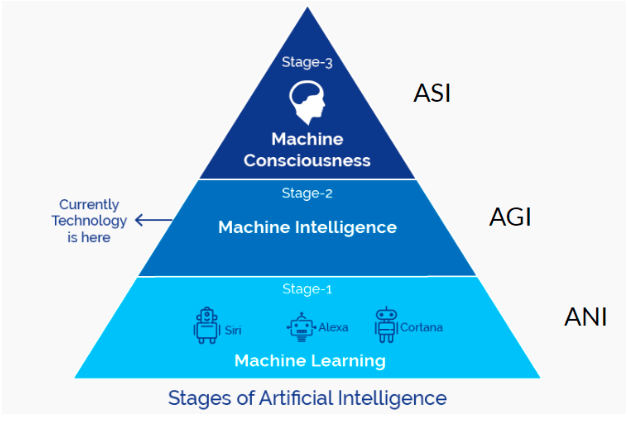
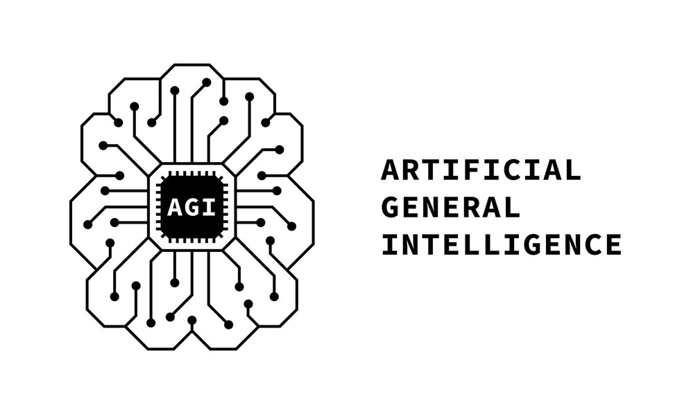
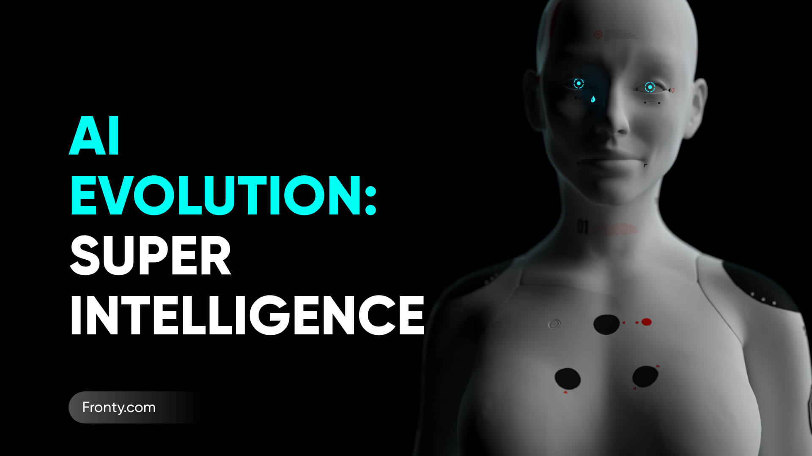

WHAT is AI?
さまざまな種類のAI

AIの開発はさまざまな方面で数多く進行中ですが、そのほとんどはこれから解説する複数のタイプに分類されます。
AIの種類は、能力的な観点で3つに、機能的な観点で4つに、心の有無という観点で2つに分けられます。
能力による分類
まず最初に、能力的な観点での分類について見てみましょう。この分類では、 ”ANI”、 ”AGI”、そして ”ASI” の3つに分けられます。
ANI - ”Artificial Narrow Intelligence”（特化型AI）
「特化型」という名前から分かるように、ANIはある特定の分野に特化したAIです。画像・音声認識、自動運転システム、チャットボットなど多くの種類があり、決まった範囲の中で仕事を行うことを得意としています。現在実用化されているAIは全て、このANIに含まれます。
AGI - ”Artificial General Intelligence”（汎用型AI）
AGIは、特定の分野に限定されずさまざまな分野の仕事を行うことができるAIです。このAIは、自身がおかれている状況を理解して、何をするべきかを考えることができます。ANIと比べてとても柔軟で、より人間に近いAIであると言えるでしょう。実用化には至っていませんが、今後十数年以内に実現するといわれています。
ASI - ”Artificial Super Intelligence”（人工超知能）
AGIがさらに進化すると、第3ステージであるASIが誕生するといわれています。ASIは人間以上の知能を持っていて、到底人間には解決することができないような課題まで解決できるAIです。ASIは完全に独立していて、自己の目的、そして自己意思決定能力を持っているので、人間の指示に従う必要がありません。その特徴から、実現した場合には人類にとって大きな影響を与える可能性があるため、注意深く研究が進められています。
心の有無による分類
次に、心の有無による分類を見てみましょう。この観点での分類では、「強いAI」と「弱いAI」の2つに分けられます。これらは、AIが真の意味で「考えることができるのか」を考えるときに使われる用語で、下記のように定義されています。